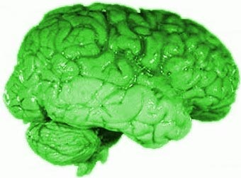

Memoization and Decorators
Definition of Memoization
 The term "memoization" was introduced by Donald Michie in the year 1968. It's based on the Latin word memorandum, meaning "to be remembered". It's not a misspelling of the word memorization, though in a way it has something in common. Memoisation is a technique used in computing to speed up programs. This is accomplished by memorizing the calculation results of processed input such as the results of function calls. If the same input or a function call with the same parameters is used, the previously stored results can be used again and unnecessary calculation are avoided. In many cases a simple array is used for storing the results, but lots of other structures can be used as well, such as associative arrays, called hashes in Perl or dictionaries in Python.Memoization can be explicitly programmed by the programmer, but some programming languages like Python provide mechanisms to automatically memoize functions.
Memoization with Function Decorators
In our previous chapter about recursive functions, we worked out an iterative and a recursive version to calculate the Fibonacci numbers. We have shown that a direct implementation of the mathematical definition into a recursive function like the following has an exponential runtime behaviour:
def fib(n):
if n == 0:
return 0
elif n == 1:
return 1
else:
return fib(n-1) + fib(n-2)
We also presented a way to improve the runtime behaviour of the recursive version by adding a dictionary to memorize previously calculated values of the function. This is an example of explicitly using the technque of memoization, but we didn't call it like this. The disadvantage of this method is, that the clarity and the beauty of the original recursive implementation is lost.
The "problem" is, that we changed the code of the recursive fib function. The following code doesn't change our fib function, so that its clarity and legibility isn't touched. To this purpose, we use function which we call memoize. memoize() takes a function as an argument. The function memoize uses a dictionary "memo" to store the function results. Though the variable "memo" as well as the function "f" are local to memoize, they captured by a closure through the helper function which is returned as a reference by memoize(). So, the call memoize(fib) returns a reference to the helper() which is doing what fib() would have done plus a wrapper which is saving the results, which are still not stored, in the memo dictionary and is preventing recalculation of results, which are already in memo.
def memoize(f):
memo = {}
def helper(x):
if x not in memo:
memo[x] = f(x)
return memo[x]
return helper
def fib(n):
if n == 0:
return 0
elif n == 1:
return 1
else:
return fib(n-1) + fib(n-2)
fib = memoize(fib)
print(fib(40))
Now we come to what's called the decorator. Let's look at the line in our code were we assign memoize to fib:
fib = memoize(fib)One says, that the fib function is decorated by the the memoize() function.
Memoize as a Class
We can encapsulate the caching of the results in a class as well, as you can see in the following example:
class Memoize:
def __init__(self, fn):
self.fn = fn
self.memo = {}
def __call__(self, *args):
if args not in self.memo:
self.memo[args] = self.fn(*args)
return self.memo[args]
As we are using a dictionary, we can't use mutable arguments, i.e. the arguments have to be immutable.
Decorators in Python
A decorator in Python is a callable Python object that is used to modify a function, method or class definition. The original object, the one which is going to be modified, is passed to a decorator as an argument. The decorator returns a modified object, e.g. a modified function, which is bound to the name used in the definition. Python decorators have a similar syntax than Java annotations. The decorator syntax in Python can be seen as pure syntactic sugar, using @ as the keyword.Example: Using a Decorator for Memoization
We already had used a decorator without saying so. The memoize function in the example at the beginning of this chapter is a decorator. We used it to memorize the results from the fib function.What we hadn't used was the special decorator syntax of Python, i.e. the at character "@"
Instead of writing the statement
fib = memoize(fib)we can write
@memoizeBut this line has to be directly in front of the decorated function, in our example fib():
def memoize(f):
memo = {}
def helper(x):
if x not in memo:
memo[x] = f(x)
return memo[x]
return helper
@memoize
def fib(n):
if n == 0:
return 0
elif n == 1:
return 1
else:
return fib(n-1) + fib(n-2)
#fib = memoize(fib)
print(fib(40))
Checking Arguments with a Decorator
In our chapter about recursive functions we introduced the factorial function. We wanted to keep the function as simple as possible and we didn't want to obscure the underlying idea, so we hadn't incorporated any argument checks. So, if somebody had called our function with a negative argument or with a float argument, our function would have got into an endless loop.The following program uses a decorator function to ensure that the argument passed to the function factorial is a positive integer:
def argument_test_natural_number(f):
def helper(x):
if type(x) == int and x > 0:
return f(x)
else:
raise Exception("Argument is not an integer")
return helper
@argument_test_natural_number
def factorial(n):
if n == 1:
return 1
else:
return n * factorial(n-1)
for i in range(1,10):
print(i, factorial(i))
print(factorial(-1))
Exercise
-
Our exercise is an old riddle, going back to 1612. The French Jesuit Claude-Gaspar
Bachet phrased it. We have to weigh quantities (e.g. sugar or flour) from 1 to 40 pounds.
What is the least number of weights that can be used on a balance scale to way any of
these quantities.
The first idea might be to use weights of 1, 2, 4, 8, 16 and 32 pounds. This is a minimal number, if we restrict ourself to put weights on one side and the stuff, e.g. the sugar, on the other side. But it is possible to put weights on both pans of the scale. Now, we need only for weights, i.e. 1,3,9,27
Write a Python function weigh(), which calculates the weights needed and their distribution on the pans to weigh any amount from 1 to 40.
Solution
-
We need the function linear_combination() from our chapter
"Linear Combinations".
def factors_set(): factors_set = ( (i,j,k,l) for i in [-1,0,1] for j in [-1,0,1] for k in [-1,0,1] for l in [-1,0,1]) for factor in factors_set: yield factor def memoize(f): results = {} def helper(n): if n not in results: results[n] = f(n) return results[n] return helper @memoize def linear_combination(n): """ returns the tuple (i,j,k,l) satisfying n = i*1 + j*3 + k*9 + l*27 """ weighs = (1,3,9,27) for factors in factors_set(): sum = 0 for i in range(len(factors)): sum += factors[i] * weighs[i] if sum == n: return factorsWith this, it is easy to write our function weigh().def weigh(pounds): weights = (1,3,9,27) scalars = linear_combination(pounds) left = "" right = "" for i in range(len(scalars)): if scalars[i] == -1: left += str(weights[i]) + " " elif scalars[i] == 1: right += str(weights[i]) + " " return (left,right) for i in [2,3,4,7,8,9,20,40]: pans = weigh(i) print("Left pan: " + str(i) + " plus " + pans[0]) print("Right pan: " + pans[1] + "\n")